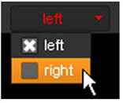

默认情况下, Nuke 将所做的任何更改应用于已处理节点的所有视图。要仅将更改应用于特定视图 (例如，左视图而不是右视图)，必须首先执行以下操作之一:
• 对于大多数节点，在节点的控件中拆分视图。
• 在 RotoPaint 节点的情况下，从 视图 节点控件中的下拉菜单。
例如，当您希望对两个视图执行相同的操作，但对每个视图使用不同的值时，这些方法很有用。
Nuke 允许您将视图分开，以便分别将更改应用于现有视图。
| 1。 | 在脚本的适当位置插入一个进程节点 (例如 ColorCorrect)。 |
| 2. | 如果您还没有这样做，请将查看器附加到节点。从查看器的控件中，选择要对其进行更改的视图。 |

| 3. | 打开节点的控件。 |
| 4. |
单击 “查看” 按钮
|


“查看” 按钮上出现一只眼睛 节点在节点图上得到一个绿色小点，表示视图已经被分割。
如果已为视图指定颜色并选中 在 UI 中使用颜色？ 在项目设置中，点也会出现在节点上，以指示哪些视图已被分割。例如，如果在左视图中使用红色并分割该视图，则节点上会出现一个红点。

您现在使用有问题的控件所做的任何更改仅应用于您选择分割的视图。对尚未拆分的控件所做的更改仍将应用于所有视图。
分割视图后，可以分别将更改应用于现有视图。只需单击您分割的控件左侧的小箭头。这将划分控件，以便您可以查看每个视图的值。
|
|
|
调整分程控制的唯一的视图,
所有视图分开。 |
| 1。 | 在节点的控件中，单击 视图 按钮 . |
| 2. | 从打开的菜单中，选择 未拆分 [视图] 。例如，要取消分割名为 左 ,你会选择 未拆分左 . |
| 3. | 对要取消分割的所有视图重复步骤 2。 |
视图被取消分割，您在分割后所做的所有更改都将丢失。
要选择要处理的视图:
| 1。 | 打开 RotoPaint 节点的控件。 |
| 2. | 从 视图 下拉菜单中，选择要处理的视图。要同时对所有视图应用更改，请分别选择所有视图。 |
| 3. | 如果选择只处理一个视图，请确保在进行更改时正在查看查看器中的选定视图。 |
|
|